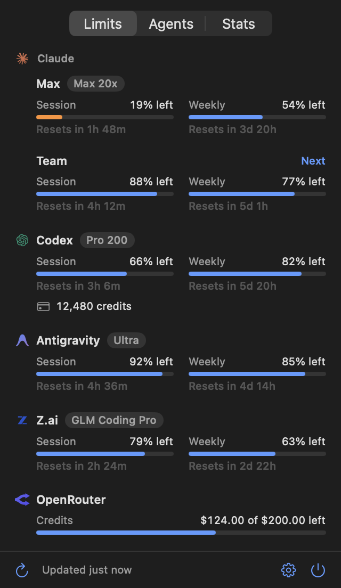

Every plan, down to the last drop.
Use any model as a built-in subagent in Claude Code,
with a subscription or API key.
macOS 15 or later · Open source
Built in
Your agents sit in the Agent tool's own list. Claude calls them like its native subagents.
Yours
A subscription or an API key: Claude, Codex, Antigravity, Z.ai or OpenRouter.
Balanced
Add several accounts per plan. Each subagent runs on the one with the most left.
Run some agents.
lastdrop spreads usage across your accounts. When a model can't start, the agent falls back on the next one in its list.
- Pick an agent.
Sample accounts · Nothing runs here
Nothing new to learn.
lastdrop adds the blue lines to what Claude reads. Its tools stay the same.
Available agent types for the Agent tool
- general-purpose: For complex, multi-step tasks.
- Explore: Read-only search across a codebase.
The Agent tool's model parameter also accepts these models the user added:
- reviewer: Reviews code and plans. (Codex · gpt-6.1-sol · high, then Z.ai · glm-5.3)
- advisor: Opinions and trade-offs. (Antigravity · gemini-4-argon · high)
- builder: Implementation and tests. (Claude · sonnet-5.5, then Z.ai · glm-5.3)
Agent({ subagent_type: "general-purpose", model: "reviewer" })
Every limit,
one glance away.
Usage left on each account, and when it resets.
The real panel · Click its tabs

Use the last drop.
Download lastdrop.zip- Move
lastdrop.appto Applications. - It isn't notarized yet, so clear the download flag:
- Open it and connect your accounts.